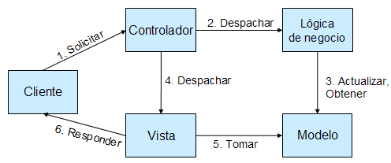

Introducción a Struts
Struts es un framework para construir aplicaciones web Java basadas en la filosofía MVC. En una charla anterior sobre patrones de diseño ya vimos cómo estaba estructurada una arquitectura MVC y cuál era el papel de cada uno de los componentes. Veremos aquí la forma en que Struts implementa esta filosofía.
Introducción a Struts
Antes de entrar en detalles sobre el funcionamiento de Struts vamos a ver primero la filosofía general de funcionamiento. Veremos también por qué usar Struts y las posibles alternativas.
Aunque la versión actual de Struts es la 1.3 (en el momento de escribir estas páginas, la 1.3.5), por el momento la mayoría de información disponible (sobre todo la impresa) trata sobre Struts 1.2, ya que la 1.3 no fue considerada como apropiada para producción hasta septiembre de 2006. Por ello aquí tratamos la versión 1.2, dando algunas indicaciones sobre la otra versión cuando es necesario. No es probable que aparezcan demasiadas versiones de Struts posteriores a la 1.3 ya que la "nueva generación" es Struts 2, un framework que hereda muchas características de Struts 1.x pero tiene un diseño más potente y flexible, fruto de los años de experiencia con Struts de muchos usuarios y desarrolladores. Al final de este tema incluímos un pequeño apéndice destacando algunas diferencias entre las versiones 1.2 y 1.3.
Por qué usar Struts. Alternativas
Antes de hablar de las supuestas bondades de Struts, conviene detenerse un momento a recalcar la diferencia entre framework y librería. Struts es un framework, lo cual significa que no solo nos proporciona un API con el que trabajar (esto ya lo haría una librería) sino también una filosofía de desarrollo, una "forma de hacer las cosas". Por tanto, el primer beneficio de usar un framework es que estamos haciendo las cosas de una forma ya probada, la misma idea que constituye la base de los patrones de diseño software.
Por supuesto Struts no es el único framework MVC existente en el mundo J2EE.Aunque existen muchos otros, Struts es el más extendido con mucha diferencia, hasta el punto de haberse convertirdo en un estándar "de facto" en el mundo J2EE. Por tanto, usando Struts estamos seguros de que dispondremos de una gran cantidad de recursos: documentación (tutoriales, artículos, libros,...) interacción con otros usuarios del framework a través de foros y similares y una amplia base de desarrolladores expertos a los que podremos acudir si necesitamos personal para un proyecto.
Hay varios frameworks "alternativos" a Struts. Spring, que veremos en uno de los módulos siguientes, incorpora también su parte MVC. Webwork, que hasta hace poco era un framework competidor de Struts se ha unificado con éste dando lugar a Struts 2. Aunque Struts 2 tiene una filosofía que lo hace sumamente interesante (incorporando por ejemplo AOP) en el momento de escribir estas líneas todavía se encuentra en fase beta. Por tanto aquí nos ceñiremos a Struts 1. Esta breve discusión sobre otros frameworks "alternativos" no quedaría completa sin nombrar a JavaServer Faces (JSF), que también se aborda en este módulo junto con Struts. JSF se solapa en algunos aspectos con Struts, ya que también implementa MVC (aunque de modo distinto). No obstante, la aportación principal de JSF no es MVC sino los componentes gráficos de usuario (GUI) de "alto nivel" para la web.
MVC y Struts
Veamos cómo implementa Struts los componentes del patrón Modelo-Vista-Controlador:
- El controlador es un servlet, de una clase proporcionada por Struts. Será necesario configurar la aplicación web (a través del fichero web.xml) para que todas las peticiones del usuario se redirijan a este servlet.
- El controlador despacha las peticiones del usuario a la clase adecuada para ejecutar la acción. En struts, las clases que ejecuten las acciones deben heredar de la clase Action.
- La vista se implementará normalmente mediante páginas JSP. Struts ofrece dos herramientas para ayudar en la presentación de datos: los ActionForms son clases que capturan los datos introducidos en formularios y permiten su validación. Las librerías de etiquetas permiten mostrar errores y facilitar el trabajo con formularios.
- La implementación del modelo corre enteramente a cargo del desarrollador, ya que es propio de la capa de negocio y no está dentro del ámbito de Struts.
En este primer tema de los dos dedicados a Struts trataremos la parte del controlador y las acciones. En el tema 2 trataremos de la vista, describiendo algunas de las librerías de etiquetas del framework.
El ciclo que se sigue cuando Struts procesa una petición HTTP aparece en la siguiente figura

- El cliente realiza la petición, que recibe el controlador de Struts. Todas las peticiones pasan por él, ya que la petición no es una URL física (no es un servlet o un JSP) sino que es un nombre simbólico para una acción.
- El controlador despacha la petición, identificando la acción y disparando la lógica de negocio apropiada.
- La lógica de negocio actualiza el modelo y obtiene datos del mismo, almacenándolos en beans.
- En función del valor devuelto por la lógica de negocio, el controlador elige la siguiente vista a mostrar.
- La vista toma los datos obtenidos por la lógica de negocio.
- La vista muestra los datos en el cliente
El controlador
La instalación de Struts es sencilla. Basta con colocar en la carpeta WEB-INF/lib de nuestra aplicación web las librerías (ficheros .jar) que vienen con la distribución estándar de Struts.
La instanciación del servlet que hará de controlador, como en todos los servlets, hay que hacerla en el web.xml de la aplicación. Salvo que tengamos necesidades muy especiales, podemos usar directamente la clase org.apache.struts.action.ActionServlet, que ya viene implementada en la distribución de Struts. Al servlet se le puede pasar opcionalmente como parámetro (en la forma estándar, con <init-param>) el nombre que va a tener el fichero de configuración de Struts, que normalmente es struts-config.xml. Por último, para que todas las peticiones del usuario se redirijan al servlet habrá que mapear el servlet en la forma habitual. Veamos un ejemplo de web.xml:
<!-- Definir el servlet que hace de controlador -->
<servlet>
<servlet-name>controlador</servlet-name>
<servlet-class>org.apache.struts.action.ActionServlet</servlet-class>
<!-- Opcional, solo ponerlo si queremos un fich. de config. con nombre distinto -->
<init-param>
<param-name>config</param-name>
<param-value>/WEB-INF/struts-config.xml</param-value>
</init-param>
<load-on-startup>2</load-on-startup>
</servlet>
<!-- redirigir ciertas peticiones al controlador -->
<servlet-mapping>
<servlet-name>controlador</servlet-name>
<url-pattern>*.do</url-pattern>
</servlet-mapping>
En el ejemplo anterior, todas las peticiones que sigan el patrón *.do se redirigirán al controlador de Struts. Por ejemplo la petición login.do será capturada por Struts y redirigida a la acción de nombre login.
Las acciones
En Struts, las acciones son clases Java, uno de cuyos métodos se ejecutará en respuesta a una petición HTTP del cliente. Para que todo funcione adecuadamente hay que asociar las peticiones con las acciones que dispararán e implementar la lógica de negocio dentro de las acciones.
Implementar las acciones
Las clases encargadas de ejecutar las acciones deben descender de la clase abstracta org.apache.struts.action.Action, proporcionada por Struts. Cuando se ejecuta una acción lo que hace Struts es llamar a su método execute, que debemos sobreescribir para que realice la tarea deseada. Por ejemplo, para el caso de una hipotética acción de login en una aplicación web:
package acciones;
import javax.servlet.http.*;
import org.apache.struts.action.*;
public class AccionLogin extends Action
public ActionForward execute(ActionMapping mapping, ActionForm form,
HttpServletRequest request, HttpServletResponse response)
throws Exception {
boolean usuarioOK;
//obtener login y password y autentificar al usuario
//si es correcto, poner usuarioOK a 'true'
...
//dirigirnos a la vista adecuada según el resultado
if (usuarioOK)
return mapping.findForward("OK");
else
return mapping.findForward("errorUsuario");
}
}
Hay que destacar varias cosas del código de la acción:
- Como se ha dicho, una acción debe heredar de la clase org.apache.struts.action.Action.
- El método execute recibe como parámetros la petición y la respuesta HTTP, lo que nos permite interactuar con ellas. No obstante, también tenemos accesibles los datos incluidos en la petición (normalmente a través de formularios) mediante el objeto ActionForm, si es que hemos asociado un objeto de esta clase a la acción en el struts-config.xml. El uso de ActionForm lo trataremos en el tema 2.
- El método execute debe devolver un objeto de la clase ActionForward, que especifica la siguiente vista a mostrar.
- Una acción puede tener varios resultados distintos, por ejemplo en nuestro caso el login puede ser exitoso o no. Lo lógico en cada caso es mostrar una vista distinta. Para evitar el acoplamiento en el código Java entre la vista a mostrar y el resultado de la acción, Struts nos ofrece el objeto ActionMapping que se pasa como parámetro del método execute. Dicho objeto contiene un mapeo entre nombres simbólicos de resultados para una acción y vistas a mostrar. La llamada al método findForward de dicho objeto nos devuelve un ActionForward que representa la vista asociada al resultado de la acción.
Asociar la petición con la acción a ejecutar
Una vez el controlador recibe la petición debe despacharla a las clases Java que implementan la lógica de negocio.La asociación entre el nombre simbólico de la acción y la clase Java que la procesa se realiza en el fichero de configuración struts-config.xml, que se coloca en el directorio WEB-INF de la aplicación. A lo largo de estos dos temas iremos viendo los distintos elementos de este fichero de configuración.
Todos los mapeados entre peticiones y acciones se colocan dentro de la etiqueta XML <action-mappings> del fichero struts-config.xml. Cada mapeado concreto es un <action>, cuyo atributo path es la petición (sin el .do, que en nuestro ejemplo es lo que llevan todas las peticiones que van para Struts) y type el nombre de la clase que implementa la acción. Por ejemplo, recordemos nuestra clase Java acciones.AccionLogin y supongamos que que es la encargada de procesar la petición a la URL login.do. El fichero struts-config.xml quedaría:
<?xml version = "1.0" encoding = "ISO-8859-1"?>
<!DOCTYPE struts-config PUBLIC "-//Apache Software Foundation//DTD Struts
Configuration 1.1//EN" "http://jakarta.apache.org/struts/dtds/struts-config_1_1.dtd">
<struts-config>
<!--definición de otros elementos del fichero de configuración -->
...
...
<!--definición de acciones -->
<action-mappings>
<!-- hacer login -->
<action path="/login" type="acciones.AccionLogin">
<forward name="OK" path="/personal.jsp"/>
<forward name="errorUsuario" path="/error.html"/>
</action>
<!-- definición de otras acciones -->
...
</action-mappings>
</struts-config>
Como se ve en el ejemplo, dentro de cada <action> hay uno o más <forward>, que son los posibles resultados de la acción, y que asocian un nombre simbólico con una vista, en este caso un JSP, que es lo más común. Revisad el código del método execute del apartado anterior para comprobar que los nombres simbólicos se corresponden con los que aparecen en el código Java.
Tratamiento de errores en las acciones
La ejecución de la acción puede generar uno o varios errores que deseamos mostrar al usuario. En Struts, el tratamiento de errores requiere seguir una serie de pasos:
- Crear una lista de errores vacía. Esta lista se modela con el objeto ActionMessages.
- Añadir errores a la lista. Cada error es un objeto ActionMessage.
- Finalmente, si la lista contiene algún error
- Guardar la lista en la petición HTTP para que no se pierda. Para ello se utiliza el método saveErrors.
- La acción debe devolver un forward que indique que se ha producido un error.
Por ejemplo, el siguiente código, que habría que colocar dentro del método execute de la acción, realiza los pasos descritos:
//crear una lista de errores vacía
ActionMessages errores = new ActionMessages();
try {
//código que ejecuta la lógica de negocio.
...
}
catch(Exception e) {
//añadir errores a la lista
errores.add(ActionMessages.GLOBAL_MESSAGE,
new ActionMessage("error.bd");
}
//comprobar si la lista de errores está vacía
if (!errores.empty()) {
//guardar los errores en la petición HTTP
saveErrors(request, errors);
//devolver un resultado que indique error. En struts-config.xml
//estará definida la página jsp asociada a este resultado
return mapping.findForward("error");
}
El constructor de un ActionMessage requiere como mínimo un argumento: el mensaje de error. Los mensajes de error no son directamente cadenas, sino claves dentro de un fichero de texto del tipo properties. Por ejemplo, la clave "error.bd" significará que debe haber un fichero .properties en el que se especifique algo como:
error.bd = se ha producido un error con la base de datos
Para indicar a struts cómo encontrar el fichero .properties, utilizamos el fichero de configuración struts-config.xml, mediante la etiqueta <message-resources> (que se pone detrás de la etiqueta <action-mappings>). Por ejemplo:
<message-resources parameter="util.recursos"/>
Indicaría a struts que busque un fichero recursos.properties dentro de la carpeta util. Normalmente, se toma como base de la búsqueda la carpeta /WEB_INF/classes, por lo que el fichero buscado será finalmente/WEB-INF/classes/util/recursos.properties.
Las claves de error pueden utilizar hasta 4 parámetros. Por ejemplo supongamos que se desea mostrar un error indicando que hay un campo requerido para el que el usuario no ha introducido valor. Sería demasiado tedioso hacer un mensaje distinto para cada campo: ("login requerido", "password requerido", etc). Es más fácil definir un mensaje con parámetros:
error.requerido = Es necesario especificar un valor para el campo {0}
Como se ve, los parámetros son simplemente números entre {}. El constructor de la clase ActionMessage permite especificar los parámetros (como se ha dicho, hasta 4) además de la clave de error
ActionMessage error = new ActionMessage("error.requerido", "login");
Vamos a ver con detalle cómo funciona el código anterior. Como ya se ha dicho, para añadir los errores a la lista se emplea el método add de la clase ActionMessages. Este método admite como primer parámetro una cadena que indica el tipo de error (lo más típico es usar la constante ActionMessages.GLOBAL_MESSAGE) y como segundo parámetro el propio objeto ActionMessage. Si en el tipo de error utilizamos un nombre arbitrario, quedará asociado a este y podremos mostrarlo específicamente en la página JSP.
Para mostrar los errores en la página JSP se puede la etiqueta <html:messages/> , que viene con las taglibs de Struts. Dicha etiqueta va iterando por los ActionMessages, de manera que podemos mostrar su valor. En un JSP incluiríamos código similar al siguiente:
<!-- referenciar la taglib de Struts que include la etiqueta -->
<%@taglib uri="http://struts.apache.org/struts/tags-html" prefix="html" %>
...
<!-- mostrar los mensajes almacenados -->
<html:messages id="e">
<ul>
<li>${e}</li>
</ul>
</html:messages>
como se ve, la etiqueta <html:messages> va iterando por una variable, de nombre arbitrario, fijado por nosotros. Al mostrar el contenido de la variable estamos mostrando el mensaje de error. En el ejemplo anterior se utiliza una lista con viñetas de HTML simplemente por mejorar el aspecto de los mensajes.
También podemos mostrar solo ciertos mensajes, en lugar de todos. En ese caso, a la hora de guardarlos debemos asignarles un identificador arbitrario en lugar de ActionMessages.GLOBAL_MESSAGE
errors.add("password", new ActionMessage("error.passwordcorto"));
Para mostrar solo este mensaje en el JSP, usaríamos el atributo property de la etiqueta </html:messages>:
<html:messages id="e" property="password">
${e}
</html:messages>
Otra posibilidad más simple de mostrar solo un mensaje es usar la etiqueta <html:errors>, que tiene también el mismo atributo property pero solo muestra un mensaje, no haciendo iteración por la lista de mensajes disponibles.
Veremos con más detalle otras etiquetas de las taglibs de Struts en el tema siguiente.
Acceder a una página a través de una acción
Si al movernos de una página a otra no vamos a realizar ninguna operación, sino que únicamente estamos navegando, podemos poner simplemente un enlace al .jsp o .html. No obstante, esto va "contra la filosofía" de MVC, en la que todas las peticiones pasan por el controlador. Además y como veremos en el último apartado el controlador puede verificar automáticamente los permisos de acceso, de modo que en muchos casos será vital que todas las peticiones pasen por el controlador.La forma más sencilla de conseguirlo en Struts es mediante el atributo forward de la etiqueta <action>
<action path="/registroNuevoUsuario" forward="/registro.jsp"> </action>
De esta manera, la petición a la URL registroNuevoUsuario.do, se redirige a la página registro.jsp pero pasando antes por el controlador.
Seguridad declarativa en Struts
La versión 1.1 de Struts introdujo la seguridad basada en acciones. Esto quiere decir que podemos combinar los mecanismos estándar de seguridad declarativa J2EE con el funcionamiento de nuestra aplicación Struts. Por tanto, primero necesitamos configurar el web.xml para restringir el acceso a los recursos protegidos a los usuarios que tengan determinado rol.
Para cada acción especificaremos qué rol o roles pueden ejecutarla, mediante el atributo roles de la etiqueta <action> en el struts-config.xml.Por ejemplo:
<action roles="admin,manager"
path="/admin/borrarUsuario"
...
</action>
Apéndice: diferencias más importantes entre Struts 1.2 y 1.3
Aquí se recogen algunas de las diferencias más importantes entre Struts 1.2 y 1.3, desde el punto de vista del desarrollador de aplicaciones web. Aunque la versión 1.3 está diseñada para ser compatible "hacia atrás" hay ciertas modificaciones necesarias para migrar una aplicación de la versión 1.2 a la 1.3. Para una guía más detallada, consultar esta wiki
- Struts 1.3 requiere un contenedor web que implemente al menos la versión 2.3 del API de servlets y 1.2 de JSP (por ejemplo Tomcat 4.x o posterior).
- El empaquetamiento en ficheros .jar ha pasado del formato "monolítico" (un único struts.jar) a estar dividido en varios archivos .jar. El núcleo de struts ahora es struts-core-nº_de_version.jar, y las taglibs (ver tema siguiente) están ahora en archivos separados.
- La declaración DOCTYPE del fichero de configuración debe cambiar para indicar que se trata de la versión 1.3, aunque
el formato en sí no ha cambiado demasiado
<!DOCTYPE struts-config PUBLIC "-//Apache Software Foundation//DTD Struts Configuration 1.3//EN" "http://struts.apache.org/dtds/struts-config_1_3.dtd"> - Algunas clases (que en Struts 1.2 ya estaban marcadas como deprecated) han desaparecido. La más importante es ActionError. Además otros métodos de otras clases que también estaban como deprecated ya no existen. Para una información más completa consultar la guía de migración a 1.3 ya mencionada